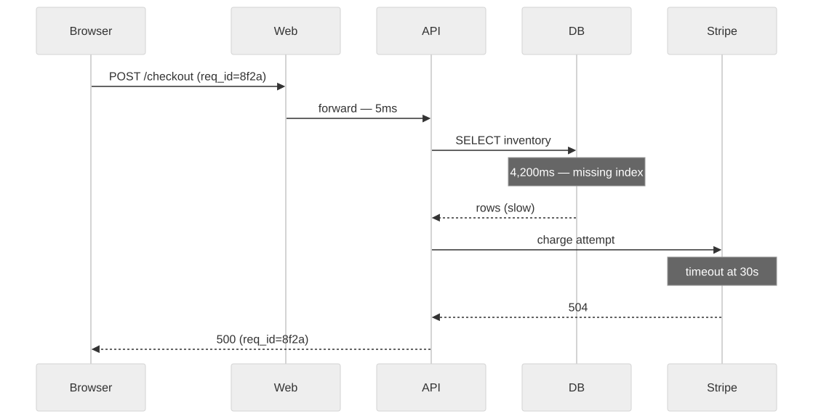

8 — You didn't write it and you can't see it either
Hand-written code you can't observe well is survivable — you remember how it works. Generated code you can't observe is a locked room.
That's the actual argument, not "AI code has worse logging." With code you wrote yourself, memory substitutes for telemetry — you already have a rough model of where a request goes and what could go wrong, so a missing log line is an inconvenience, not a dead end. With generated code, you have neither the telemetry nor the memory. You've given up the one thing that made thin observability tolerable in the first place. Charity Majors' distinction between monitoring and observability maps onto this exactly: monitoring answers known-unknowns, the failure modes you already thought to watch for. Observability answers unknown-unknowns. A vibe-coded app typically has close to zero of both, because nobody ever sat down and asked "what could go wrong here" — so nobody defined the questions monitoring would need to answer.

Same five hops in both versions. One you can query in thirty seconds. The other you grep by hand for an hour.
This isn't a niche concern picked up by security researchers — it's showing up in industry-wide data. DORA's 2025 report, drawing on roughly 5,000 respondents, put it plainly: AI doesn't fix a team, it amplifies what's already there. Teams adopting AI without observability foundations already in place showed increased delivery instability, not decreased. The comprehension gap behind that is measurable too: debugging is the coding task most degraded by AI assistance, and Stack Overflow's 2025 survey found developer trust in AI-generated code fell from 40% to 29% even as usage climbed to 84% — people are shipping more of it while trusting it less, which is exactly the position you're in without visibility into what it's actually doing in production.

Without a trace, this is "checkout is slow sometimes." With one, it's "missing index on inventory" — a five-minute fix instead of a five-day investigation.
Most incident time isn't spent fixing — it's spent finding, and finding is exactly what observability shortens. Even companies whose entire product is observability aren't immune to losing it: a failsafe overcorrection in Cloudflare's own log pipeline lost 55% of customer logs for three and a half hours in November 2024, leaving customers blind at precisely the moment they needed to debug. If Cloudflare can go dark for a few hours, a vibe-coded app that never had the lights on to begin with isn't a special case — it's the default.
The fix is an afternoon of work, not a platform migration: structured JSON logs, a correlation ID minted at the edge and threaded through every hop and log line, one distributed trace via OpenTelemetry, error tracking so exceptions stop vanishing silently into a caught exception, and one dashboard covering the four golden signals — latency, traffic, errors, saturation.
If you've shipped fast with AI tools and want a second pair of eyes before it goes further, that's exactly what a vibe code audit is for.